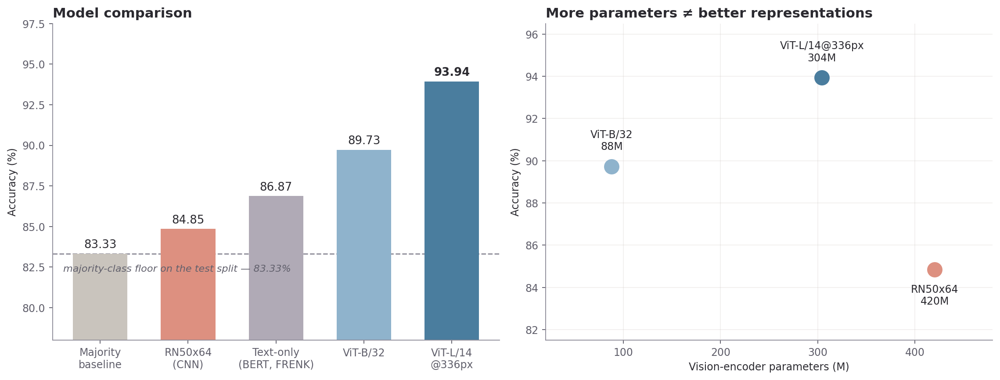

PrideShield
Detecting anti-LGBTQ+ hate speech in memes, where the hostility lives in the combination of image and caption rather than in either one alone. Frozen CLIP encoders feed an MLP classifier; three vision encoders are benchmarked under identical conditions against a text-only transformer baseline — on a corpus collected and labeled by hand, with no budget.
Archived research code, developed July 2024 – May 2025 as an undergraduate major project at Jaypee University of Information Technology.
OrientationStart here
This page is the complete technical account of the project, written to be read straight through. Chapters 1–8 run in the order the work actually happened: problem → data → preprocessing → modeling → evaluation → what was learned → what would change.
New to multimodal ML?
Read top to bottom. Every term is defined where it first appears, and the glossary collects them all.
Know this space already?
Use the sidebar. The likely destinations are Results, the encoder comparison, and Limitations.
Assessing the work?
How to read the metrics and Limitations state plainly what these numbers do and do not support.
Text-only moderation systems miss hateful memes, because a benign image and a benign caption can combine into something hostile. No public dataset of anti-LGBTQ+ memes existed, so one was built: roughly 1,700 images scraped from Reddit, 4chan and image search, deduplicated, run through OCR to extract the text baked into each image, and labeled independently by two people. Each meme was then converted into two numeric vectors by CLIP — a model that maps images and text into one shared space — and the two vectors were glued together and fed to a small neural network that outputs hateful / not hateful. Three different CLIP vision encoders were compared under identical conditions; the best reached 93.94% accuracy against an 83.33% majority-class floor on the test split. The largest encoder finished last, and the binding constraint throughout was dataset size, not model capacity.
This is an undergraduate project on free-tier compute, evaluated on a single fixed test split of 198 examples. The results are honest but narrow. Chapter 8 is not boilerplate — it is the part that determines what these figures actually mean.
Chapter 1The problem
Why a text classifier is structurally unable to solve this, and what the absence of a budget forced the design to become.
The multimodal gap
Automated content moderation is mature on plain text and weak on images that contain text. Anti-LGBTQ+ harassment in meme form sits exactly in that gap. A meme has two channels — the picture and the overlaid caption — and the hostile meaning is frequently carried by neither channel alone but by the relationship between them: an innocuous stock photo paired with an innocuous phrase, where the pairing is the attack.
A text-only classifier sees only the caption, and a caption stripped of its image is often unremarkable. This is not a tuning problem; the signal is genuinely absent from the input. Any system that reads only one channel will systematically under-detect this class of content.
Does adding the visual channel measurably improve detection over a strong text-only baseline on this class of content — and if so, which visual encoder does it best?
The zero-budget constraint
The project had no funding: no paid APIs, no annotation service, no GPU allocation beyond free-tier Colab. That single constraint shaped the architecture more than any modeling preference did, and reading the rest of this page without it makes several decisions look arbitrary.
| What was wanted | Blocked by | What was done instead |
|---|---|---|
| Twitter/X collection | Paid-only after the 2023 API changes | X dropped as a source entirely |
| Bulk image-search APIs | No free tier at useful volume | Selenium browser automation |
| Commercial annotation | Cost per label | Hand-labeled by two people |
| GPU compute for fine-tuning | No grant or allocation | Frozen encoders + a small trainable head |
The constraint was not purely limiting. Frozen embeddings are computed once and cached, which made the pipeline fast and every experiment cheap. The real cost landed on dataset scale, and that is what bounds every result on this page.
Chapter 2Building the dataset
There was no corpus to download, so the first several months of the project were data engineering, not machine learning.
Meta's Hateful Memes Challenge (2020) was the only substantial public benchmark at the time. It covers hate broadly rather than anti-LGBTQ+ content specifically, and its examples are purpose-built — human annotators constructed "benign confounders" over licensed stock imagery — so it does not reflect memes as they actually circulate. Text-only hate-speech corpora exist in quantity but cannot support a multimodal task at all. The corpus therefore had to be built end to end.
flowchart LR
A["`**4 sources**
Reddit · 4chan
DDG / Bing / Google`"]
B["`**1,696**
after pHash
deduplication`"]
C["`**1,667**
dual-labeled
2 annotators`"]
D["`**1,320**
final dataset
80.9% / 19.1%`"]
A --> B --> C --> D
D --> E["924 train"]
D --> F["198 validation"]
D --> G["198 test"]
style D fill:#5b7f9e,color:#fff,stroke:#3f6180
style A fill:__NEUTRAL_FILL__,stroke:__NEUTRAL_STROKE__,color:__NEUTRAL_TEXT__
style B fill:__NEUTRAL_FILL__,stroke:__NEUTRAL_STROKE__,color:__NEUTRAL_TEXT__
style C fill:__NEUTRAL_FILL__,stroke:__NEUTRAL_STROKE__,color:__NEUTRAL_TEXT__
Collection: six methods, three failed
The failures explain the eventual architecture better than the successes do.
| Method | Outcome | |
|---|---|---|
Twitter/X via twint | ✕ | Broken by the 2023 API changes; the official API is paid-only. X was dropped entirely — a real gap in coverage, since X is arguably where the most meme-format hate circulates. |
| ScraperAPI (commercial) | ✕ | Never funded. The prototype still contains scraper_api_key = 'YOUR API KEY' — the clearest artifact of the budget constraint anywhere in the repo. |
requests + BeautifulSoup | ✕ | Image-search results are rendered by JavaScript; a plain HTTP fetch returns a shell page containing no image URLs. This failure is what forced browser automation. |
| Reddit — PRAW / asyncpraw | ✓ | Free tier, rate-limited. An async rewrite overlapped requests to raise throughput within the same quota. |
| 4chan — public JSON API | ✓ | No authentication required. Highest hostile-content density of any source, and the easiest to collect from — the two facts are related. |
| Selenium → DDG / Bing / Google | ✓ | Drives a real browser, waits for render, scrolls to trigger lazy loading, then scrapes the live DOM. The most maintenance-heavy component in the pipeline. |
Deduplication was a correctness requirement
The same viral memes appear on every platform, so multi-source collection returns heavy overlap.
If a duplicate lands on both sides of a train/test split, the model can score well by
memorization and the reported accuracy becomes fiction. Perceptual hashing
(imagededup, pHash) hashes visual content rather than bytes, so it catches
re-encoded, cropped and watermarked variants that exact file hashing misses. This ran
before splitting, which is the only ordering that prevents leakage.
The measured post-deduplication corpus is 1,696 images, 476 MB. The pre-dedup raw count was not preserved in the surviving artifacts, so no deduplication rate is claimed here.
Annotation and label reconciliation
1,667 memes were labeled independently by two annotators using three codes: hateful (1), not hateful (0), and a third code for items that could not be judged (−1). Independent dual labeling on a subjective task is not redundancy — the disagreement rate is itself a measurement of how hard the task is.
| Stage | Count | Share |
|---|---|---|
| Dual-annotated | 1,667 | 100% |
| Annotators agreed | 1,448 | 86.9% |
| Dropped — annotators disagreed | 219 | 13.1% |
| Dropped — both marked "cannot judge" (−1) | 110 | 6.6% |
| Dropped — no usable image or caption downstream | 18 | 1.1% |
| Final dataset | 1,320 | 79.2% |
This is a real bias, stated up front. Dropping the 219 disagreements rather than adjudicating them removes precisely the ambiguous cases — so the final corpus skews toward clear-cut examples, and every accuracy figure on this page is an accuracy on an easier distribution than the real one. Keeping contested items as soft labels, or as a separate hard-case benchmark, would have been the better choice.
Dataset statistics
All figures measured from the surviving artifacts, not estimated.
| Artifact | Rows | Columns | Size |
|---|---|---|---|
| Image corpus (post-deduplication) | 1,696 images | — | 476 MB |
| OCR extraction output | 19,938 text regions | 3 | 1.1 MB |
| Dual-annotated table | 1,667 | 5 | 451 KB |
| Final training dataset | 1,320 | 11 | 1.06 MB |
OCR ran over 1,405 distinct memes and produced 19,938 text regions — an average of 14.2 detected regions per image. That number is a concrete measure of how fragmented meme text is compared with ordinary document OCR, where a page is a handful of blocks. Mean detection confidence was 0.711 (median 0.793) with a long tail down to zero: the quantitative case for the correction stack in Chapter 3.
OCR coverage is 1,405 of the 1,696 deduplicated images. The 291-image gap is not explained by the surviving artifacts — most likely unreadable or non-meme files removed before extraction — and is recorded here rather than smoothed over.
| Property | Value |
|---|---|
| Class balance (full corpus) | 1,068 hateful (80.9%) · 252 not hateful (19.1%) |
| Caption length | mean 39.8 words · median 25 · max 1,622 |
| OCR correction magnitude | mean Levenshtein distance 8.5 · median 6 · max 229 |
| OCR confidence | mean 0.711 · median 0.793 |
The final table keeps Extracted Text (raw OCR), corrected_text,
levenshtein_distance and normalized_levenshtein side by side, so the
correction stage is auditable per row rather than being an opaque transformation.
Two numbers worth pausing on. A median caption of 25 words sits comfortably inside CLIP's 77-token limit, so the chunking workaround exists for a small tail — the 1,622-word maximum — not for the typical case. And a mean edit distance of 8.5 characters between raw and corrected OCR puts a number on how much repair the text actually needed.
Splits
A single fixed 70/15/15 split, generated once and reused across all three encoders.
| Split | Rows | Hateful | Not hateful | % hateful |
|---|---|---|---|---|
| Train | 924 | 737 | 187 | 79.76% |
| Validation | 198 | 166 | 32 | 83.84% |
| Test | 198 | 165 | 33 | 83.33% |
The split is not stratified. Class balance drifts from 79.76% in train to 83.33% in test, so the corpus-level figure of 80.9% is not the right reference for test accuracy. The majority-class floor on the split actually evaluated is 83.33%, and that is the number every accuracy on this page should be read against. Stratified splitting would have cost nothing and should have been used.
Chapter 3Preprocessing
Turning scraped images into a usable multimodal training table — where the hard part was reading the text off the images.
flowchart TD
R["Raw scraped images"]
R --> D["`**Deduplication**
perceptual hash (pHash)`"]
D --> O["`**OCR extraction**
EasyOCR`"]
O --> T["`**T5 correction**
structural repair`"]
T --> L["`**Levenshtein repair**
token-level spellcheck`"]
L --> M["`**Label reconciliation**
keep only agreeing items`"]
M --> F["`Training table
image + corrected caption + label`"]
style F fill:#5b7f9e,color:#fff,stroke:#3f6180
style O fill:#a8813f,color:#fff,stroke:#83642f
style T fill:#a8813f,color:#fff,stroke:#83642f
style L fill:#a8813f,color:#fff,stroke:#83642f
style R fill:__NEUTRAL_FILL__,stroke:__NEUTRAL_STROKE__,color:__NEUTRAL_TEXT__
style D fill:__NEUTRAL_FILL__,stroke:__NEUTRAL_STROKE__,color:__NEUTRAL_TEXT__
style M fill:__NEUTRAL_FILL__,stroke:__NEUTRAL_STROKE__,color:__NEUTRAL_TEXT__
OCR extraction
OCR — optical character recognition — is the step that reads text out of an image and returns it as characters. Meme text is close to the worst case for it: stylized fonts, low contrast against busy backgrounds, spread across multiple panels with no reading order, and frequently rendered as part of the picture rather than overlaid on it. EasyOCR handled the common cases and failed on the rest, producing dropped characters, merged words, spurious characters hallucinated from background texture, and scrambled ordering.
The caption embedding is half the classifier's input, and CLIP embeds nonsense confidently — it returns a perfectly well-formed vector for a garbled string, with no signal that anything is wrong. Bad OCR therefore does not add noise; it produces a confidently wrong text vector that actively poisons the fused representation. Fixing OCR bought more than any head architecture did.
The correction stack
Two stages were layered on the raw EasyOCR output, in this order and for this reason:
- T5 sequence-to-sequence correction. T5 is a text-to-text transformer; here it rewrites a damaged string into a plausible clean one. It handles structural damage — merged words, lost spacing, broken segmentation — which spans token boundaries and therefore cannot be fixed by a spellchecker operating one word at a time.
- Levenshtein / spellchecker repair. Levenshtein distance counts the single-character insertions, deletions and substitutions needed to turn one string into another. This stage maps residual character-level errors onto their nearest dictionary neighbours, and doubles as a partial defense against the deliberate misspellings used to evade keyword filters.
Measured effect: mean edit distance of 8.5 characters between raw and corrected text (median 6, max 229). No ablation of the correction stack was run, so its contribution to final accuracy is documented but not isolated — see Chapter 8.
Chapter 4Modeling
How a meme becomes two numeric vectors, and what is trained on top of them.
How CLIP works, and why it fits
An embedding is a fixed-length list of numbers representing a piece of content, arranged so that semantically similar content ends up nearby. CLIP (Contrastive Language–Image Pretraining) trains a vision encoder and a text encoder jointly on hundreds of millions of image–caption pairs, with an objective that pulls matching pairs together and pushes mismatched pairs apart. The result is a single shared space in which an image vector and a text vector are directly comparable — which is exactly what a task about the relationship between a picture and its caption needs.
flowchart TB
subgraph PRE["CLIP pretraining · contrastive objective"]
direction LR
IM["Image"] --> VIT["`Vision encoder
ViT or ResNet`"]
TX["Caption"] --> TXE["`Text encoder
Transformer`"]
VIT --> EMB["`**Shared embedding space**
matching pairs pulled together,
mismatched pushed apart`"]
TXE --> EMB
end
subgraph USE["How PrideShield uses it · encoders frozen"]
direction LR
MI["Meme image"] --> FV["`Vision encoder
frozen`"]
MC["OCR caption"] --> FT["`Text encoder
frozen · 77 tokens`"]
FV --> V1["`image vector
512 / 768 / 1024-d`"]
FT --> V2["`text vector
same width`"]
end
PRE -.->|"pretrained weights"| USE
style EMB fill:#5b7f9e,color:#fff,stroke:#3f6180
style VIT fill:__NEUTRAL_FILL__,stroke:__NEUTRAL_STROKE__,color:__NEUTRAL_TEXT__
style TXE fill:__NEUTRAL_FILL__,stroke:__NEUTRAL_STROKE__,color:__NEUTRAL_TEXT__
style IM fill:__NEUTRAL_FILL__,stroke:__NEUTRAL_STROKE__,color:__NEUTRAL_TEXT__
style TX fill:__NEUTRAL_FILL__,stroke:__NEUTRAL_STROKE__,color:__NEUTRAL_TEXT__
style FV fill:#a8813f,color:#fff,stroke:#83642f
style FT fill:#a8813f,color:#fff,stroke:#83642f
Architecture and fusion
Free-tier Colab could not fine-tune a 304M-parameter vision transformer, which fixed the architecture before any modeling preference entered: frozen CLIP encoders as feature extractors, plus a small trainable MLP head. The upside is that embeddings are computed once and cached to disk, after which every experiment trains in seconds — which is what made a three-encoder comparison and a 30-trial hyperparameter search affordable at all.
flowchart LR
I["Meme image"] --> VE["`CLIP vision encoder
frozen`"]
C["OCR caption"] --> TE["`CLIP text encoder
frozen · 77-token limit`"]
VE --> N1["L2 normalise"]
TE --> N2["L2 normalise"]
N1 --> CAT["`concatenate
2 × embed dim`"]
N2 --> CAT
CAT --> MLP["`**MLP head** (trained)
512 → 256 → 128 → 2
LeakyReLU · dropout 0.4`"]
MLP --> OUT["hateful / not hateful"]
style VE fill:__NEUTRAL_FILL__,stroke:__NEUTRAL_STROKE__,color:__NEUTRAL_TEXT__
style TE fill:__NEUTRAL_FILL__,stroke:__NEUTRAL_STROKE__,color:__NEUTRAL_TEXT__
style I fill:__NEUTRAL_FILL__,stroke:__NEUTRAL_STROKE__,color:__NEUTRAL_TEXT__
style C fill:__NEUTRAL_FILL__,stroke:__NEUTRAL_STROKE__,color:__NEUTRAL_TEXT__
style MLP fill:#5b7f9e,color:#fff,stroke:#3f6180
style OUT fill:#54876a,color:#fff,stroke:#3c6650
ViT-L/14@336px; src/models.py takes them as a
parameter.
L2 normalisation before concatenation scales each modality's vector to unit
length, so whichever encoder happens to produce larger-magnitude outputs cannot dominate the fused
representation purely by scale. The fused vector is then twice the encoder's embedding width —
1,024 for ViT-B/32, 1,536 for ViT-L/14@336px, 2,048 for
RN50x64.
# src/models.py — the trained component, in full
fuse = L2norm(image_emb) ‖ L2norm(text_emb) # → 2 × embed_dim
Linear(2·embed_dim, 512) → LeakyReLU → Dropout(0.4)
→ Linear(512, 256) → LeakyReLU → Dropout(0.4)
→ Linear(256, 128) → LeakyReLU → Dropout(0.4)
→ Linear(128, 2)The three encoders
CLIP ships in several sizes and two architectural families. Three were benchmarked under identical downstream conditions — same head, same search budget, same splits — so that differences are attributable to the encoder rather than to the setup around it.
| Encoder | Mechanism | Patch / input | Embed dim | Vision params |
|---|---|---|---|---|
ViT-B/32 | Vision Transformer — global self-attention over image patches | 32px patches @ 224px | 512 | 87.8M |
ViT-L/14@336px | Larger ViT, finer patches, higher input resolution | 14px patches @ 336px | 768 | 304.3M |
RN50x64 | Scaled ResNet — convolutional, local receptive fields | convolutional stack @ 448px | 1024 | 420.4M |
Parameter counts are the CLIP vision tower only, computed directly with
open_clip rather than quoted from memory; full model sizes including the text tower
are 151.3M, 427.9M and 623.3M respectively. Note that
ViT-L/14@336px varies patch size, input resolution and parameter count together, so
the comparison identifies which encoder is better but does not isolate why.
Cached embeddings
Each encoder's embeddings were computed once and written to disk, which is what made repeated experiments cheap:
| Encoder | Embed dim | Fused input width | Cached train CSV |
|---|---|---|---|
ViT-B/32 | 512 | 1,024 | 11.9 MB |
ViT-L/14@336px | 768 | 1,536 | 17.4 MB |
RN50x64 | 1024 | 2,048 | 0.9 MB ⚠ |
The RN50x64 cache is corrupt, and the file size is why. Inspecting
it shows the embeddings were serialised with NumPy's abbreviated string repr, so each 1,024-d
vector was written as [ 0.00955 0.01671 0.009155 ... 0.002924 0.0062 -0.01504 ] —
six values and an ellipsis. The ViT caches are intact. This affects only the exported CSV, not
necessarily the in-memory run that produced the 84.85% figure, but it does mean the
RN50x64 result cannot be reproduced from the saved artifacts. Noted
here rather than presented as a legitimately smaller file.
Class imbalance
At roughly 80/20, a model that always predicts "hateful" already scores about 80% — so the training signal has to be corrected or the model will learn the shortcut. Two standard strategies were implemented:
- Focal Loss, written from scratch rather than imported. It multiplies the
standard cross-entropy by
(1 − p_t)γ, which shrinks the contribution of examples the model already gets right and concentrates gradient on the hard ones. - Class-weighted cross-entropy, which simply weights each class inversely to its frequency.
Neither was assumed correct: the loss function was made a search parameter. Optuna
selected Focal Loss for ViT-L/14@336px but class-weighted
cross-entropy for ViT-B/32. The right imbalance strategy depended on the
encoder — an interaction that fixing the loss in advance would have hidden completely.
Hyperparameter search
A 30-trial Optuna study per encoder searched hidden-layer widths, dropout,
activation, learning rate, weight decay and loss function, selecting on validation performance.
The winning configuration for ViT-L/14@336px:
| Hyperparameter | Selected value |
|---|---|
| Hidden layers | [512, 256, 128] |
| Activation | LeakyReLU |
| Dropout | 0.4 |
| Optimiser | AdamW, lr 0.01, weight decay 0 |
| Loss | Focal Loss |
Chapter 5Evaluation
The protocol first, then the numbers — because the numbers only mean something given the protocol.
Protocol
- Test set: 198 examples, 165 hateful / 33 not hateful, one fixed split, never used for model selection.
- Selection: hyperparameters chosen on the 198-example validation split; the test split was scored once per encoder.
- Reference floor: the majority-class predictor scores 83.33% on this test split.
- Text-only baseline: a transformer classifier trained on FRENK-LGBT, a public text corpus — not on this project's meme captions.
- Not done: k-fold cross-validation, multi-seed runs, confidence intervals.
Results
Best configuration — CLIP ViT-L/14@336px → searched MLP head:
| Metric | Score |
|---|---|
| Accuracy | 93.94% |
| Precision (hateful class) | 96.91% |
| Recall (hateful class) | 94.58% |
| F1 (hateful class) | 95.73% |
| ROC-AUC | 0.9030 |
| Model | Modality | Accuracy |
|---|---|---|
| Majority-class predictor (test split) | — | 83.33% |
RN50x64 → MLP | Image + text | 84.85% |
| Text-only transformer (FRENK-LGBT) | Text | ~86.87% |
ViT-B/32 → MLP | Image + text | 89.73% |
ViT-L/14@336px → MLP | Image + text | 93.94% |

docs/figures/make_results_figure.py.How to read these numbers
The test split is 83.33% hateful, so a model that outputs "hateful" unconditionally scores
83.33%. The real margin is therefore +10.6 points over trivial, not "93.94%".
By the same measure RN50x64 at 84.85% is only 1.5 points above a
constant predictor — which reads very differently from "85% accurate". Every accuracy on this
page should be quoted alongside that floor.
ROC-AUC is the most robust single number here at 0.9030. It measures how well the model ranks a random hateful example above a random benign one across all thresholds, so unlike accuracy it is insensitive to the class skew that makes the accuracy figures flattering.
Precision, recall and F1 are positive-class figures — computed with
average="binary" on the hateful class, which is the easy class at 83%
prevalence. Macro-averaged figures, which weight the small benign class equally, would be
materially lower and were not recorded.
These four figures do not fully reconcile with each other. On 198 examples with 165 positives, an accuracy of 93.94% means exactly 12 errors; precision 96.91% and recall 94.58% imply roughly 156 true positives, 9 false negatives and 5 false positives — which is 14 errors, or 92.93% accuracy. No integer confusion matrix satisfies all four numbers simultaneously, so at least one is misreported in the source. The figures are reproduced here as submitted rather than quietly adjusted; the confusion matrix itself was not preserved. Accuracy and ROC-AUC are the figures to rely on.
Chapter 6Findings
What the experiments actually established — including the parts that did not work.
More parameters did not mean better representations
RN50x64 has the most parameters (420.4M in the vision tower) and the
widest embedding (1,024-d) of the three — and finished last. It
lost by ~5 points to ViT-B/32, which has roughly a fifth of its
parameters and half its embedding width, and by ~9 points to ViT-L/14@336px, which is
~28% smaller.
Capacity was not the binding factor; representation quality was. A plausible reading is that the task requires relating overlaid text semantics to image semantics across the whole frame, and ViT's global self-attention captures that relational structure in a way convolutional inductive bias, with its local receptive fields, does not. Stated as an interpretation, not a proven mechanism — CLIP's ViT and ResNet variants also differ in training recipe and data seen, so architecture is not the only variable in play.
Why the finding holds at all: because the comparison was controlled. Same head, same search budget, same splits, same preprocessing. Absent that, the result would be an anecdote.
Rejected variants
| Attempt | Outcome | Why |
|---|---|---|
| Transformer over tabular features | No gain | 924 training examples cannot support the capacity, and a concatenated embedding has no sequential structure for attention to exploit |
| MLP + BatchNorm | No consistent improvement | Small batches on a small dataset make BatchNorm's running statistics noisy |
| MLP + L2 regularisation + early stopping | No improvement | Dropout at 0.4 was already doing the regularisation work |
| Deeper MLP heads | Overfit | Dataset size |
The consistent theme: every attempt to add capacity failed, and the binding constraint was always dataset size. That is a useful negative result — it locates the problem in the data, not the architecture, and it is why Chapter 7 leads with labeling throughput rather than with a better model.
The fusion ceiling
Concatenating two frozen embeddings is early fusion in its crudest form. The MLP receives two independent vectors glued end to end and must infer their relationship from scratch, with no mechanism for the modalities to attend to one another. For memes this is a real handicap, and precisely at the point that defines the task: hostility lives in the interaction between image and caption — a benign image plus a benign phrase producing a hateful whole — and concatenation gives the model no direct way to represent that interaction. Cross-attention was the obvious alternative and was out of reach on free-tier compute.
Chapter 7Future work
This is 2024-era tooling. What has changed since, and how the project would be rebuilt today.
Frozen CLIP plus a small head was a defensible design under a zero-dollar budget in 2024. It is not what anyone should build now — and the parts of the field that moved fastest are precisely the parts this project struggled with: multimodal fusion, OCR on stylized text, and labeling throughput.
Where the state of the art is
| Family | Relevance |
|---|---|
| Qwen2.5-VL / Qwen3-VL | Strong open-weight VLMs, notably good at OCR and text-in-image handling |
| InternVL | Competitive open-weight multimodal reasoning, strong on fine visual detail |
| LLaVA / LLaVA-NeXT | Reference open architecture for visual instruction tuning |
| Frontier APIs (Claude, GPT, Gemini) | Strongest zero-shot multimodal reasoning, no training required |
The relevant capability is not better image classification — it is that these models read the text inside the image and reason about its relationship to the imagery in a single pass. That is exactly the operation concatenated CLIP embeddings cannot perform, and it dissolves the fusion ceiling described above rather than engineering around it. Separately, LoRA / QLoRA now make it feasible to fine-tune multi-billion-parameter VLMs on a single consumer GPU, so the compute wall that forced frozen encoders is largely gone.
The rebuild, in order
- Establish the zero-shot baseline first. Measure a modern VLM zero-shot on the existing 1,320 examples, reporting macro metrics and AUPRC. This may end the project — if zero-shot matches 93.94%, the trained pipeline has no justification. This inverts the original workflow: collect → train → evaluate becomes evaluate-what-exists → collect-only-where-it-fails.
- Break the labeling bottleneck. Dataset size bounded nearly every result here, and labeling throughput bounded dataset size. VLM pre-labeling with human adjudication of low-confidence cases could plausibly cover an order of magnitude more data for the same effort. Keep contested items as soft labels or a hard-case benchmark instead of dropping them, and deliberately collect benign content to reach a realistic class balance.
- Replace the fusion mechanism. Fine-tune a VLM directly (LoRA/QLoRA) so the model attends jointly over image and caption natively — and drop the OCR correction stack entirely, since modern VLMs read stylized meme text far better than 2024-era OCR.
- Fix the evaluation protocol. Stratified splits; a like-for-like text-only ablation on the same corpus; k-fold CV with confidence intervals; macro metrics and AUPRC as headline figures; multi-seed runs; confusion matrices retained.
- Evaluate on public benchmarks too. The space is far better served now than in 2024 — HarMeme/Harm-P, MAMI, HatReD (hateful-meme reasoning and explanation) and HOMO-MEX for Spanish-language LGBTQ+ hate. A custom corpus should be the domain-specific supplement, not the whole evaluation.
- Evaluate what actually gates deployment. False-positive rate on reclaimed in-group language — the dominant failure mode, and the one where errors do the most harm. Adversarial robustness to character substitution, leetspeak, crops and re-encoding. Subgroup breakdowns. Calibration, so uncertain cases can be routed to a human.
- Explanation, not just classification. A VLM can be prompted to explain why a meme is hateful, producing an auditable rationale. For moderation — where decisions get appealed and must be justified — that is far more useful than a scalar score.
- Infrastructure from day one. Experiment tracking, config-driven sweeps, seeded runs tied to versioned dataset snapshots.
Deduplicate before splitting, or your test set leaks. Benchmark encoders under identical downstream conditions, or the comparison means nothing. Treat the loss function as a search parameter rather than an assumption. Dual-label subjective tasks and read the disagreement rate as a measurement, not an inconvenience. And always quote accuracy against the majority-class floor of the split you actually evaluated.
Chapter 8Limitations
What these results do not support. This chapter is load-bearing.
| Area | Limitation |
|---|---|
| Scope | An undergraduate project on free-tier compute, using a self-collected and self-labeled corpus of 1,320 examples. The results hold within that scope and were not intended to generalise beyond it. |
| Test set | 198 examples, a single fixed split, no cross-validation, no multi-seed runs, no confidence intervals. The encoder ranking is clear; the smaller gaps between them are not statistically established. |
| Unstratified splits | Class balance drifts from 79.76% (train) to 83.33% (test), so the corpus-level 80.9% figure is the wrong reference for test accuracy. The correct floor is 83.33%. |
| Metric consistency | The reported precision/recall/F1 do not reconcile exactly with the reported accuracy on a 198-example test set (see Chapter 5). Accuracy and ROC-AUC are the figures to rely on. |
| The multimodal comparison | The text baseline was trained on a public corpus (FRENK-LGBT) rather than on this project's meme captions, so the ~7-point gap reflects both the added modality and the different training data. It is indicative, not a controlled ablation. |
| Dataset composition | 80.9% positive — inverted relative to real moderation traffic, where most content is benign. English-only, drawn from a narrow set of platforms over a short time window. Items where the two labelers disagreed were dropped, so the corpus skews toward clear-cut cases. |
| Reproducibility | The RN50x64 embedding cache is truncated and cannot reproduce the 84.85% figure. Experiments were not tracked in a logger at the time; metrics come from the submitted project report. Notebooks use Colab-specific paths. |
| Not measured | Macro-averaged P/R/F1, AUPRC, calibration, subgroup and fairness analysis, adversarial robustness, and false-positive rate on reclaimed in-group language. Ablations of the OCR-correction stack and of the fusion strategy were also not run. |
| Dataset availability | The corpus is not public. Release was not authorized by the supervising faculty, and publishing a corpus of scraped hate speech targeting a marginalized community would be the wrong thing to do regardless. |
Treat a classifier of this kind as a triage aid, not an adjudicator. False positives on reclaimed in-group language are the dominant failure mode for this class of model, and silencing the community the system exists to protect is a worse error than missing a slur. That failure mode was not evaluated here, which is itself a reason not to deploy this as-is.
ReferenceGlossary
Every term used above, in one place.
- Embedding
- A fixed-length list of numbers representing a piece of content, arranged so semantically similar content lands nearby in that space.
- CLIP
- Contrastive Language–Image Pretraining. A vision encoder and a text encoder trained jointly on image–caption pairs, producing a shared space where image and text vectors are directly comparable.
- Contrastive objective
- A training signal that pulls matching pairs together in embedding space and pushes mismatched pairs apart.
- Frozen encoder
- A pretrained model used purely as a feature extractor — its weights are not updated during training. Cheap, and it lets embeddings be computed once and cached.
- ViT (Vision Transformer)
- An image model that splits the image into fixed-size patches and applies self-attention across all of them, giving every patch a global view of the image.
- ResNet / convolutional inductive bias
- A convolutional architecture that builds up features from local receptive fields. Efficient and strong on texture and local pattern, but relational structure across the whole frame has to be assembled through depth.
- Early fusion / concatenation
- Combining two modalities by gluing their vectors end to end before the classifier. Simple, and unable to model interaction between the modalities directly.
- Cross-attention
- A fusion mechanism that lets each modality attend to the other, so the model can represent their interaction explicitly. The alternative to concatenation, and more expensive.
- MLP head
- A small stack of fully connected layers trained on top of frozen features to produce the final classification.
- L2 normalisation
- Rescaling a vector to unit length, so magnitude differences between modalities do not let one dominate the fused representation.
- Dropout
- Randomly zeroing a fraction of activations during training to reduce overfitting.
- Focal Loss
- A loss that multiplies cross-entropy by
(1 − p_t)γ, down-weighting examples the model already classifies confidently so gradient concentrates on hard ones. - Class-weighted cross-entropy
- Standard cross-entropy with each class weighted inversely to its frequency, so the minority class is not ignored.
- Majority-class floor
- The accuracy obtained by always predicting the most common class. On the test split here it is 83.33%, and it is the only sensible reference point for the accuracy figures.
- ROC-AUC
- The probability the model ranks a random positive above a random negative. Threshold-independent and far less flattered by class imbalance than accuracy.
- AUPRC
- Area under the precision–recall curve. More informative than ROC-AUC when the positive class is rare — not recorded for this project.
- Macro vs. binary averaging
- Binary averaging reports metrics for the positive class only; macro averaging weights every class equally. The figures here are binary, which is the more flattering of the two on this data.
- Optuna
- A hyperparameter-search library. Used here for a 30-trial study per encoder over layer widths, dropout, activation, learning rate, weight decay and loss function.
- OCR
- Optical character recognition — reading text out of an image and returning it as characters. EasyOCR was used here.
- Perceptual hash (pHash)
- A hash of an image's visual content rather than its bytes, so re-encoded, cropped or watermarked copies produce similar hashes and can be detected as duplicates.
- Levenshtein distance
- The number of single-character insertions, deletions and substitutions needed to turn one string into another.
- T5
- A text-to-text transformer; used here to rewrite structurally damaged OCR output into plausible clean text.
- VLM (vision-language model)
- A model that takes an image and a text prompt together and reasons over both jointly — the class of model that supersedes the embed-then-classify design used here.
- LoRA / QLoRA
- Parameter-efficient fine-tuning: train small low-rank adapters over a (quantized) frozen base model instead of updating all its weights.